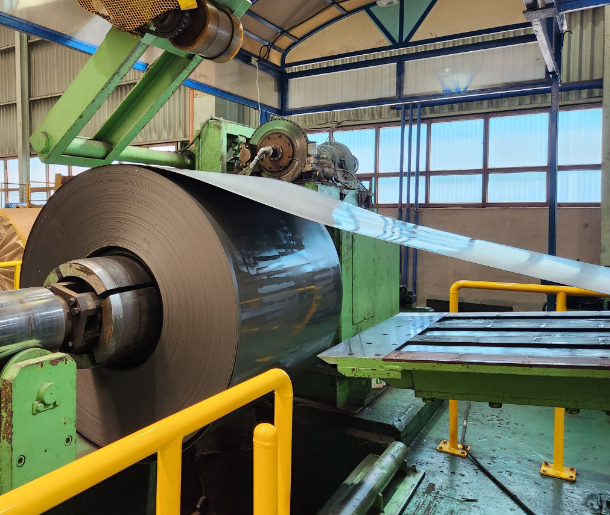
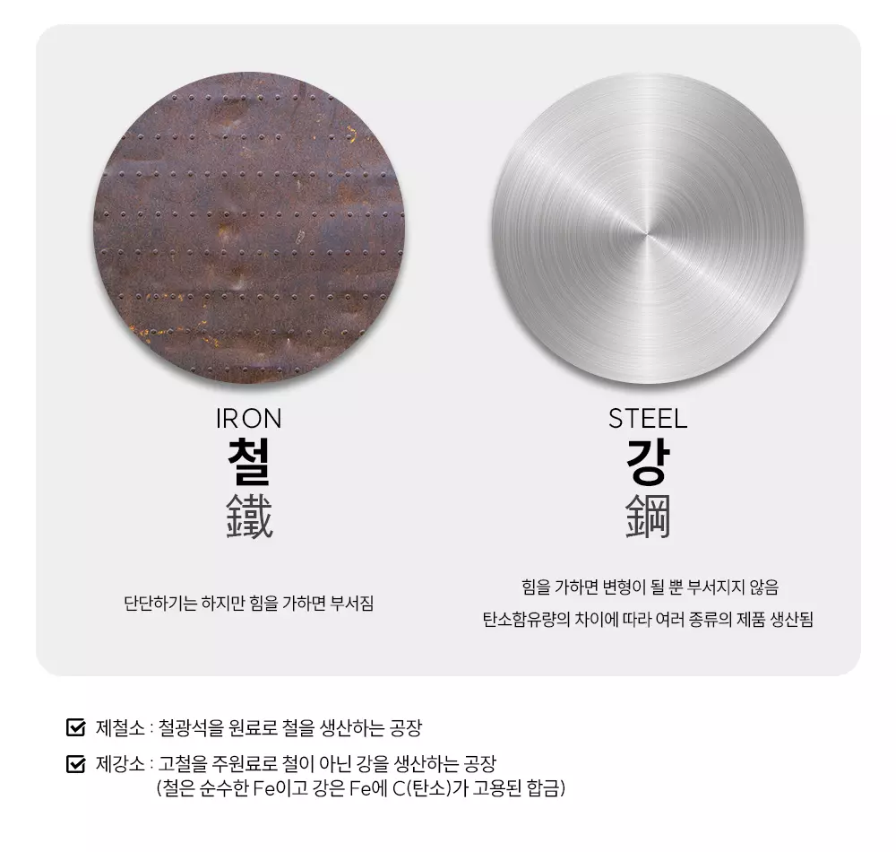

철강상식
- 철강 鐵鋼
- 주철과 강철을 합쳐서 부르는 말로 철과 강은 서로 다른 소재입니다.

- 철(鐵)
- 액체 상태로 용광로에서 갓 뽑아낸 쇳물을 선철이라 합니다.
- 이것을 틀에 집어넣고 식히면 제품이되는데 이것을 주조라고 부르며,
- 선철이 주조 작업에 사용 될 때 이를 주철이라고 부릅니다.
- 강(鋼)
- 순수한 철에 일부 불순물을 첨가하여 단단하기, 무르기 등의 성질을 조정한 철입니다.
- 불순물은 대표적으로 5대원소인 탄소(C),규소(SI),망간(MN),인(P),황(S)이 있습니다.
- 이 중 탄소(C)가 많이 들어가면 단단해지지만 충격에 약해져서
- 탄소 함유량을 기준으로 철강의 등급(강종)을 분류합니다.
- ※ 탄소강(구조용탄소강, 탄소공구강, 스프링강), 특수강(구조용특수강), 공구강( 합금공구강), 주철(회주철,가단주철 등)
